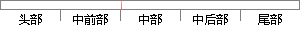

此模块主要包含：查看个人信息，，增、改、查个人信息。
片段位置图

相似结果|
相似片段 1：根据第三章的需求分析可知，前台用户系统主要包括用户个人信息、任务管理和账户明细三大模块。其中用户个人信息模块包含用户注册、登录、退出、修改密码和查看个人信息功能。任务管理模块包含任务分类，任务完成
相似片段 2：客户服务系统总体框架294.3 系统功能模块设计4.3.1 用户功能模块用户功能模块是用户所具有的功能进行设置的模块，主要包含注册模块、查看个人信息模块、转账模块、登录模块、修改密码模块、查看账户余额
相似片段 3： feedback page415.3 我的工间5.3.1 基本信息本模块是包含所内社工的个人信息中的基本信息模块，注意，只能查看自己的个人信息，别的社工的个人信息无法查看。图 5-6 系统用户基本信息
相似片段 4：用户昵称查看用户头像查看个性签名拍照从手机相册选择查看大图<
相似片段 5：列表界面显示用户所有参与的约球活动信息。个人中心模块实现流程如图 4-4 所示。个人中心模块包含个人信息查看、订单信息查看以及约球记录查看三个子功能，用户进入个人中心后，根据自身需求进入不同的子界面
相似片段 6：个人信息录入成功页面c.研究生个人信息录入模块的主要代码省略6.3研究生个人管理模块研究生的功能模块主要包括查看修改个人信息，网上选课，查看所选课程，查看成绩，发表论文登记，开题报告申请，论文答辩申请。这里
相似片段 7：查看个人约球记录接口 http POST id（可选） Json4.3.4 个人信息和体育馆信息模块接口个人信息模块和体育馆信息模块包含个人信息接口、发布体育馆信息接口以及查看体育馆信息接口。个人信息
相似片段 8：，个人信息查看图4．20个人管理模块时序图个人管理一工号一工龄一家庭住址一联系电话一qq+查看()+信息管理()图4．21个人管理模块类图—幽．．。．．．．．．。。—削．．．．。．．．．．．菜公司
相似片段 9：档案管理界面输入居民的姓名或者身份证号码（3）点击“申请查看”按钮并附加申请查看理由预期结果 申请查看居民个人信息档案的消息发送至医护人员 B该条测试用例的主要目的在于测试系统权限管理模块的申请查看居民个人信息档案功能是否能够正确实现。
|
※ 片段修改建议 ※
近似词参考：- 主要：首要 重要
- 包含：包括 包罗 包孕 蕴含
- 查看：检察
系统自动生成语句：此模块首要包括：检察个人信息，，增、改、查个人信息。
注：本片段修改建议为系统自动生成，仅供参考。